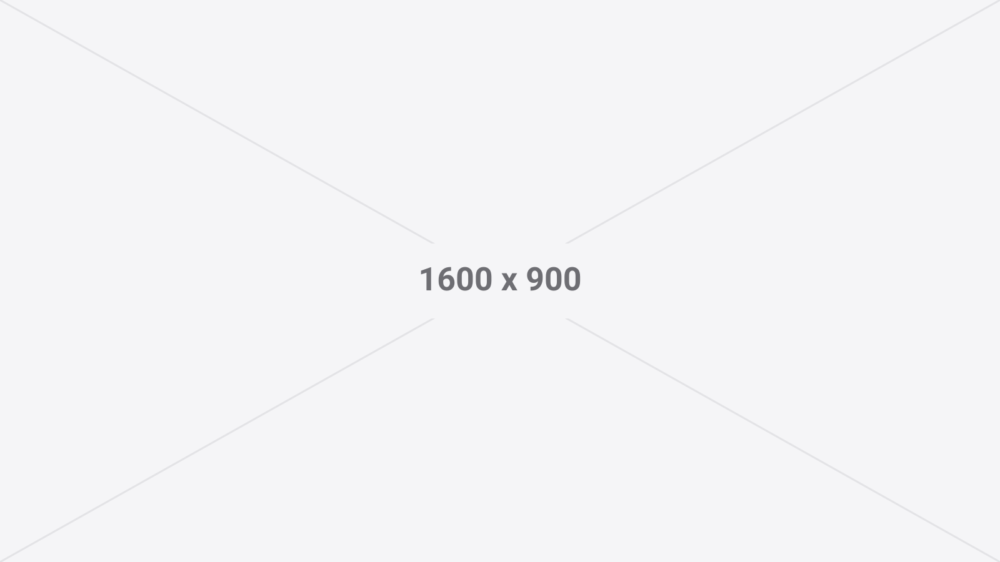
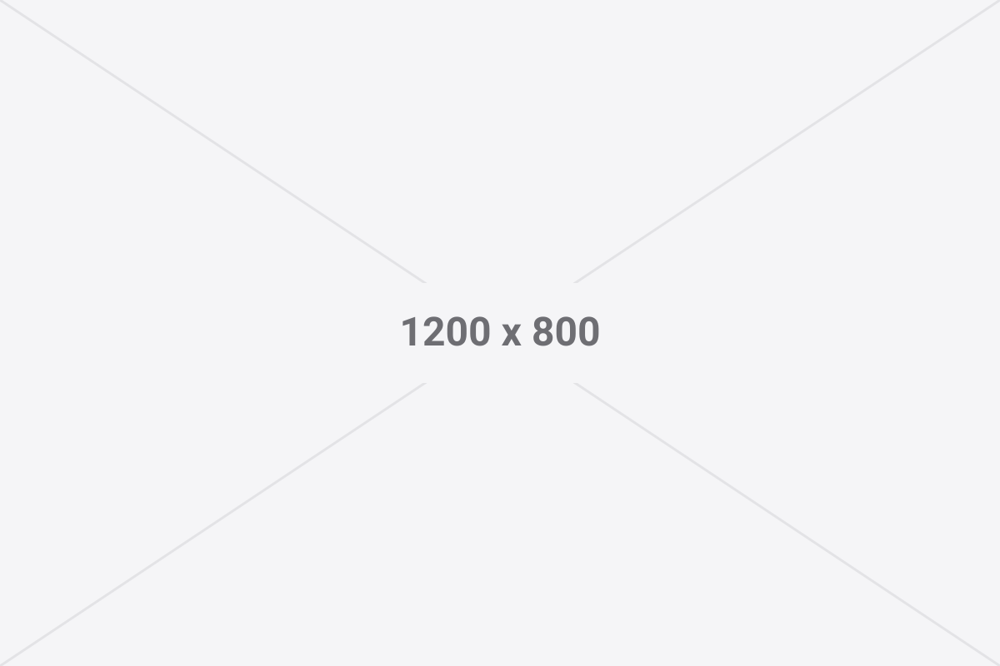

O texto da matéria corre na mesma coluna em que correm as entradas da home, com a mesma medida de cerca de 72 caracteres por linha e fechando na mesma borda direita. A coluna estreita da esquerda continua ali, vazia, reservada para as notas de margem e para as imagens que sangram.
Todo parágrafo precisa da classe justify. Sem ela o texto fica alinhado à esquerda
e quebra o esquadro que sustenta o resto do site. A hifenização automática depende do lang="pt-BR"
na tag <html>, que já está no lugar.

wide: ocupa as duas colunas, sangra para a esquerda e termina na
borda direita de sempre. Foto: quem tirou.Como escrever uma matéria nova
Copie a pasta blog/modelo com um nome novo, ajuste o cabeçalho e escreva. O nome
da pasta é o endereço da matéria, então ele é definitivo: escolha curto, em minúsculas, com hífen entre as
palavras e sem acento.
- Troque título, subtítulo, data, tempo de leitura e tags.
- Escreva o conteúdo e coloque as imagens na mesma pasta.
- Atualize o
<title>, a meta description, o canonical, as tags Open Graph e o JSON-LD do fim do arquivo. - Adicione a entrada em
blog/index.htmle a URL emsitemap.xml.
A nota de margem fica na altura do parágrafo que vem depois dela no HTML, encostada no vão entre as colunas. Serve para a observação lateral, o aviso de versão, a referência solta. Se o texto é importante, ele vai no corpo.

wide: acompanha a largura do texto. Boa para captura de tela, em
que o detalhe importa mais que o tamanho.Toda imagem precisa de width, height, alt e
loading="lazy". As medidas evitam que a página pule enquanto carrega, o alt descreve a
imagem para quem usa leitor de tela e o carregamento preguiçoso deixa a primeira tela abrir antes do resto.
Salve em WebP: os dois arquivos de exemplo aqui são SVG só porque são placeholders.
A citação ganha uma barra discreta na esquerda e um corpo maior. Ela existe para a frase de outra pessoa, não para dar destaque a uma frase minha.
Quem disse, onde disse
Código
Código aparece em duas formas. No meio da frase, assim, para um nome de arquivo ou
de comando. Em bloco, para o que precisa ser lido linha por linha:
python3 -m http.server 8000
# http://localhost:8000/blog/O bloco rola sozinho na horizontal quando a linha é longa, então a página nunca rola de lado. A fonte monoespaçada é a do sistema de quem visita, igual ao resto: nada é baixado.
Subtítulo de terceiro nível
Existe, mas use pouco. Uma matéria com três níveis de hierarquia normalmente é duas matérias.
- Lista com marcador, para enumerar sem dar ordem.
- Link no meio do texto fica azul, como este, porque azul aqui só aparece em coisa clicável.
- Links para fora levam
rel="noopener".